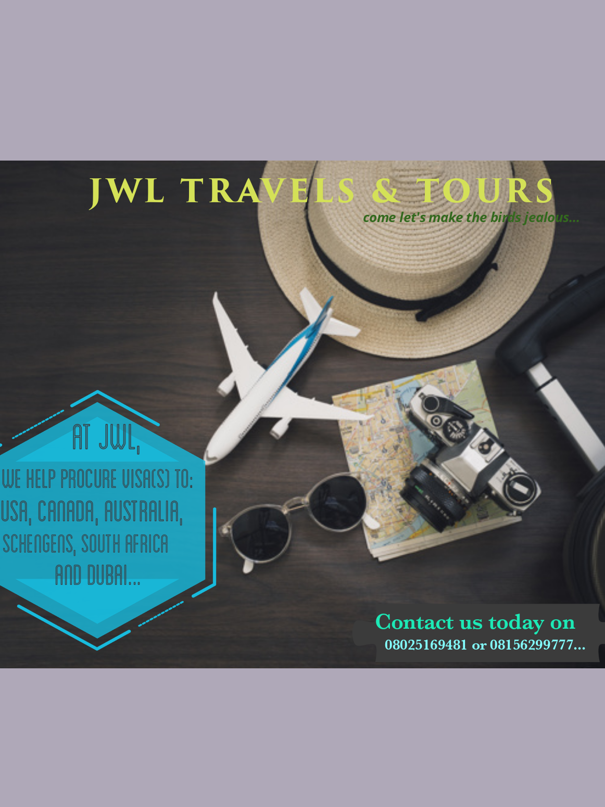

About Me
My name is Florence Ogunbore, an awesomness of God's creation, i hail from the mega city of
Lagos state. I'm dark skinned, pretty and awesome. I enjoy surfing the net, particularly
reading up on things that fascinates me, from history to crime documentary to trending news,
I enjoy seeing movies in my spare time, I enjoy listening to songs{RnB,Soul,Hiphop are my favs},
I'd say I also enjoy eating too.LOOOOL, it's what it is.
A while ago, i took interest in the coding world, i had earlier heard about it in 'Game Shakers'
a sitcom on Nickelodeon ooh i think i forget to mention that I also enjoy watching cartoons too, a really
big cartoon enthusiast. Anyway, the sitcom centers around two girls that own a gaming company, one of the
girls codes and make the games they sell. It looked surreal at first but i read up more on it and even loved
it more. I definetly think coding is one thing I'd enjoy doing as well.
Of course, i love my friends and family.
Conclusion
I forgot to mention earlier that i teach myself graphic designs with the help
of several apps on my phone, like Canva and Flyer maker.

These are some of my works
I like social media as well, you know one needs to be updated with what's happening around the world. my fav is Twitter and
you can follow me on my handle @The_Florencee
Again, I'm a legend of awesomeness and i hope you enjoyed it. Thanks for reading, i really hope you enjoyed it.
SIGNED BY;
The_Florencee.